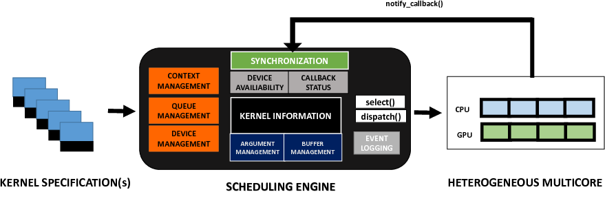

Scheduling ¶
PySchedCL offers a scheduling engine (scheduler.py) capable of dispatching a set of independent OpenCL kernels to available CPU and GPU devices on a heterogeneous platform. The engine takes care of the OpenCL runtime context, command queue and device management. It also takes care of managing resources associated with each OpenCL kernel. Given a set of kernel specification files and a scheduling policy, the engine takes care of managing each read, write and computation operation associated with all kernels through correct synchronization primitives. This is depicted in the following figure. 
Depending on the total number of CPU and GPU devices present in the target platform, corresponding contexts, command queues and devices are initially setup. Buffer and argument information for each OpenCL kernel is maintained by the framework. The dispatch() function dictates to which set of devices a kernel should be mapped at runtime. The selection criteria for choosing a kernel from a set of kernels competing for resources constitutes the scheduling heuristic. The scheduling engine allows the user to design and incorporate their own scheduling heuristics by defining their own version of the select() function. The input to this function would be a set of user defined task queue(s) where each queue may contain OpenCL kernels that share the same characteristics. Depending on the device availability and the selection strategy, the relevant set of arguments is provided to the dispatch() function which carries out the final runtime mapping. The scheduling engine internally maintains ready queues and device counters that depict runtime device availability. Once a kernel has finished execution on a particular device, it notifies the engine with the help of notify_callback() function. The corresponding ready queues and device counters are updated accordingly.
We provide a list of guidelines that may be used by end users in devising and experimenting custom scheduling heuristics using the scheduling engine. We proceed by describing the implementation of the baseline heuristic in detail.
Queue Specification
The user initially needs to provide a task queue specification by setting the number of task queues and specifying characteristic properties of each task queue. One example would be specifying the partition boundaries of each queue. For the baseline heuristic, the task queue specification maintains three distinct priority queues cpu_q, gpu_q and mixed_q containing tasks that should execute only on the CPU, only on the GPU, and in a partitioned fashion between a CPU and GPU respectively. The ordering of tasks inside each queue is done on the basis of total number of global work items. The corresponding code for task queue specification must be written inside select_main function of the scheduler.py script. This is depicted below.
1 2 3 4 5 6 7 8 9 10 11 12 13 14 15 16 17 | for i in range(len(kernels)): kernels[i].build_kernel(gpus, cpus, ctxs) kernels[i].random_data() p = kernels[i].partition num_global_work_items = kernels[i].get_num_global_work_items() if p == 0: heapq.heappush(cpu_q, (p, -num_global_work_items, i)) rCPU += 1 elif p == 10: heapq.heappush(gpu_q, (-p, -num_global_work_items, i)) rGPU += 1 else: heapq.heappush(mixed_q, (abs(p-5), -num_global_work_items, i)) rCPU +=1 rGPU +=1 |
Custom Select Routine
After setting up the task queue specification, the user must specify a scheduling heuristic by designing a select() function in scheduler.py. The arguments of select() comprise the queues in the task queue specification. The selection strategy may be designed by a set of rules that uses this task queue specification. The set of rules for the baseline strategy are as follows.
- If both types of devices are available, a task from mixed_q is dequeued and selected.
- If only one type of device is available, tasks from queues cpu_q or gpu_q are selected and returned.
1 2 3 4 5 6 7 8 9 10 11 12 13 14 15 16 17 18 19 20 21 | def baseline_select(kernels, **kwargs): mixed_q = kwargs['M'] gpu_q = kwargs['G'] cpu_q = kwargs['C'] now_kernel = None if fw.nCPU > 0 and fw.nGPU > 0 and mixed_q: i_p, i_num_global_work_items, i = heapq.heappop(mixed_q) i_num_global_work_items, i_p = kernels[i].get_num_global_work_items(), kernels[i].partition now_kernel = (i, i_p) elif fw.nCPU > 0 and cpu_q: c_p, c_num_global_work_items, c_i = heapq.heappop(cpu_q) now_kernel = (c_i, 0) elif fw.nGPU > 0 and gpu_q: g_p, g_num_global_work_items, g_i = heapq.heappop(gpu_q) now_kernel = (g_i, 10) if now_kernel is not None: i, p =now_kernel logging.debug( "Selecting kernel " + kernels[i].name + " with partition class value " + str(p)) return now_kernel, None |
Register Select Routine in Engine
Once, the task queue specification has been designed and the select function has been implemented, the method should be registered into the scheduling engine so that it may be called using the command line utility. This may be done by first including the name of the selection strategy in the parse_arg() routine so that the command line utility may display the available scheduling heuristic on the terminal. This should be followed by including a conditional statement inside the main function of scheduler.py. Both of these changes are depicted below.
1 2 3 4 5 6 7 8 9 10 | def parse_arg(args=None): parser.add_argument('-s', '--select', help='Scheduling heuristic (baseline, lookahead, adbias) ', default='baseline') if __name__ == '__main__': if args.select == "baseline": dump_dev = select_main(kernels, select=baseline_select) |
TaskSet File Specification
The scheduler.py script processes a file with .task extension which contains a list of kernel specification files along with partition class values and dataset values. A sample taskset specification file is shown below.
mean.json 6 512 reduce1.json 10 1024 atax2.json 4 1024 std.json 8 512 reduce5.json 10 2048 2DConvul.json 2 256 reduce0.json 10 1024 reduce4.json 10 1024 DotProduct.json 10 8192 reduce2.json 10 2048 reduce3.json 10 1024 mm21.json 2 512 bicg2.json 9 512 reduce6.json 10 512 VectorAdd.json 10 8192 covar.json 4 256 corr.json 5 512 mm22.json 3 1024 |
Running the Scheduler Script
One may invoke the scheduler.py script inside the scheduler folder on a taskset specification file inside the info folder and generate makespan results for the same.
$ ./scheduler.py -f info/sample.task -ng 4 -nc 4